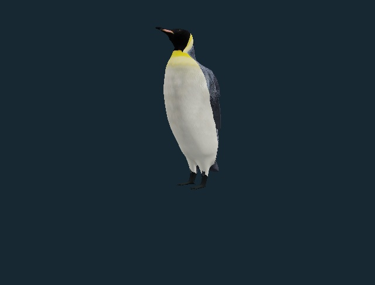
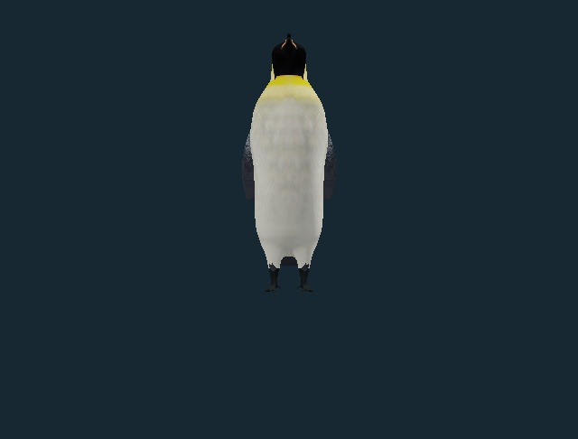
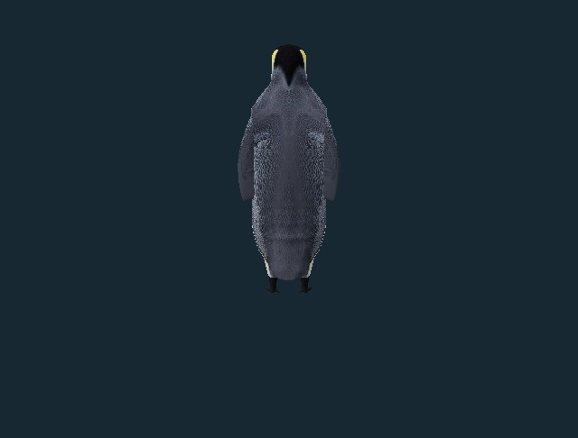
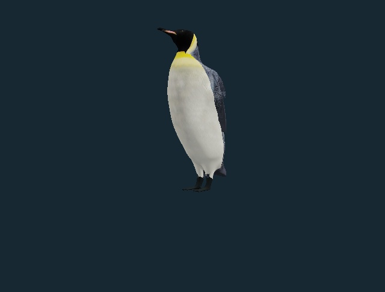
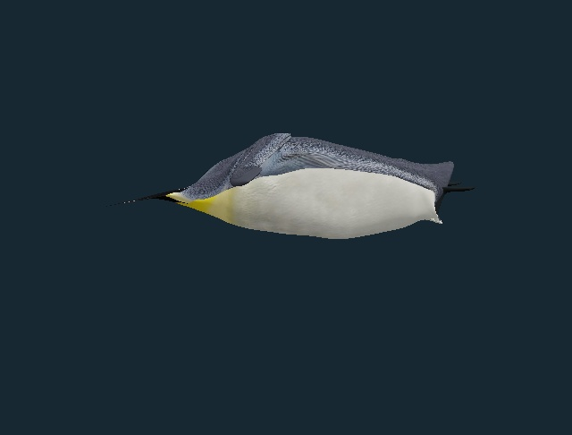
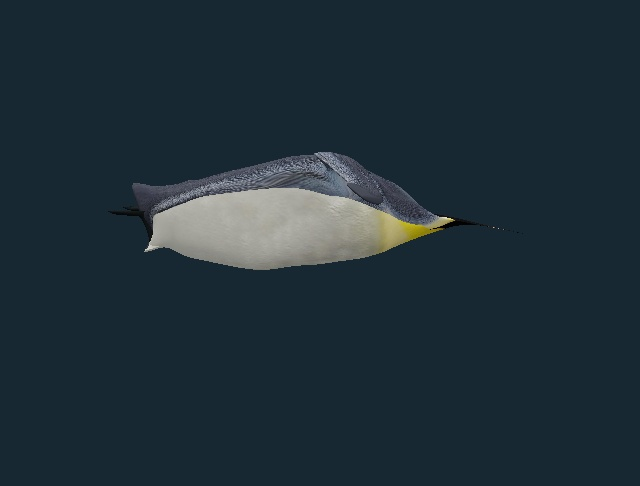
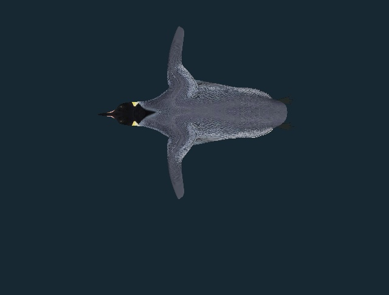
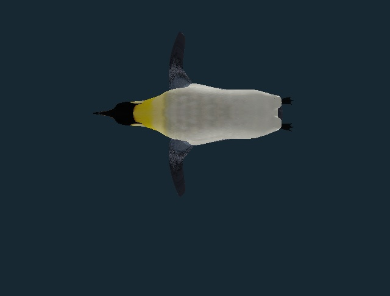
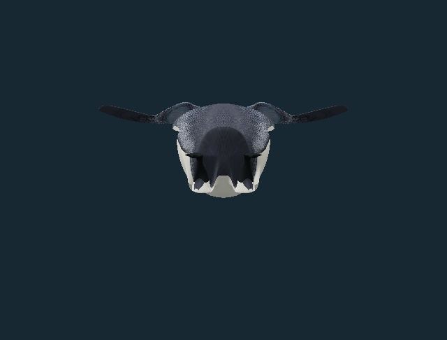
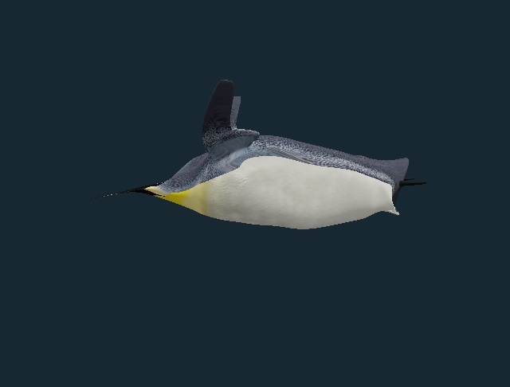

PHENOVOXEL ARCHIVE · v0.6.70 · 4 NOVEMBER 2026
A feathered penguin that moves.
The selected Marcel Porsiel model now replaces the previous authored emperor exterior. Its original feather images and UV coordinates are retained, with a new bound skeleton, emperor-specific exterior adaptations and a separate streamlined swimming posture.
Open interactive penguin ↗Download animated textured GLBLicense & credits
Choose Walk or Swim to start playback. Each finite study can be restarted by selecting its button again. Pause and seek to inspect a pose. The GLB also contains four standard animation clips: walk, swim into glide, held glide and rest posture.
What changed
- Selected artist geometry and two original 512-pixel feather images replace the v0.6.69 procedural body.
- The bill and flippers are shortened; vertex-color adaptations soften the orange markings and add a pink lower-bill panel. The source images themselves remain unchanged.
- Seven joints are bound to the surface. The shoulder weights are continuous across the retained materials, the outer flippers stay stiff, and both webbed feet remain attached.
- A smooth water-posture morph straightens the upright body and extends the head. Swimming keeps the belly down, moves both flippers in a paired dorsoventral cycle and trails the feet.
- Walking alternates short lifted recovery steps and planted support, ending with both feet supported. No display ground is included.
Biological basis and limits
| Study | Evidence used | Scope |
|---|
| Active swimming | Sato et al. 2010, table 2: nine free-ranging emperor penguins had a mean dominant stroke-cycle frequency of 1.47 Hz; a separate seven-bird Penguin Ranch dataset reported 1.35 Hz. | The active display cycle uses 1.47 Hz. This is one reported dataset, not a universal constant. Angles, amplitude, transition envelope and speed are authored. |
| Stroke and glide | van Dam et al. 2002 documents intermittent stroking and prolonged gliding in emperors. | The eight-second display settles into a glide; it is not a complete measured dive. |
| Feet and flippers | Australian Antarctic Program: flippers propel; feet and tail steer. | Feet trail during swimming. No alternating foot-paddle propulsion is shown. |
| Walking | Griffin & Kram 2000 measured emperor waddling and centre-of-mass mechanics. | Alternating support and a modest lateral shift are qualitative. Step length, timing, balance forces and metabolic cost are not calibrated. |
| Adult exterior | New Zealand Birds Online and AAP inform the shorter bill, pale neck patches and adult proportions. | An adapted artist model, not a measured scan. Feather pattern, proportions and posture have not been independently certified. |
Oxygen stores, cardiac responses, thermoregulation, feather waterproofing, buoyancy and hydrodynamic forces are not simulated. The studies describe external posture and movement.
Inspect the actual model

Standing, with lowered flippers and two webbed feet. Actual derivative model render with simplified studio lighting.
Front view of chest, feet and bill. Actual derivative model render with simplified studio lighting.
Rear view of the retained feathered exterior. Actual derivative model render with simplified studio lighting.
Alternating short steps · display time 2 s. Actual derivative model render with simplified studio lighting.
Paired flipper stroke · display time 2 s. Actual derivative model render with simplified studio lighting.
Opposite side of the same swimming pose. Actual derivative model render with simplified studio lighting.
Top view of both articulated flippers. Actual derivative model render with simplified studio lighting.
Belly-down swimming posture from below. Actual derivative model render with simplified studio lighting.
Rear of the streamlined glide, with both feet. Actual derivative model render with simplified studio lighting.
A second stroke phase · display time 2.24 s. Actual derivative model render with simplified studio lighting.Verification and provenance
The release checks the selected source, retained image and UV hashes, normalized skin weights, coincident material seams, paired rigid outer flippers, planted stance feet, pose bounds, clean action resets and agreement between exported clips and viewer poses. The bald eagle and 335 other species records remain unchanged, as do all 37 original registered model payloads.
Source and preservation record · Strict reversible record changes · Behavior inventory
Model credit: Marcel Porsiel (@Marcemellow). Adaptations, binding and motion studies: PhenoVoxel Archive. CC BY-NC 4.0 applies to the derivative model and renders; noncommercial use with attribution. The examined BlackCat1677 derivative was not incorporated because its downloaded geometry had no bound skin weights. No paid generation credits were used.
Animated GLB: 7,391,360 bytes
SHA-256 bb5fe29fc16a35d234c97d44a79b67c5bcfe6c27fabecc222b44571925c02d2b